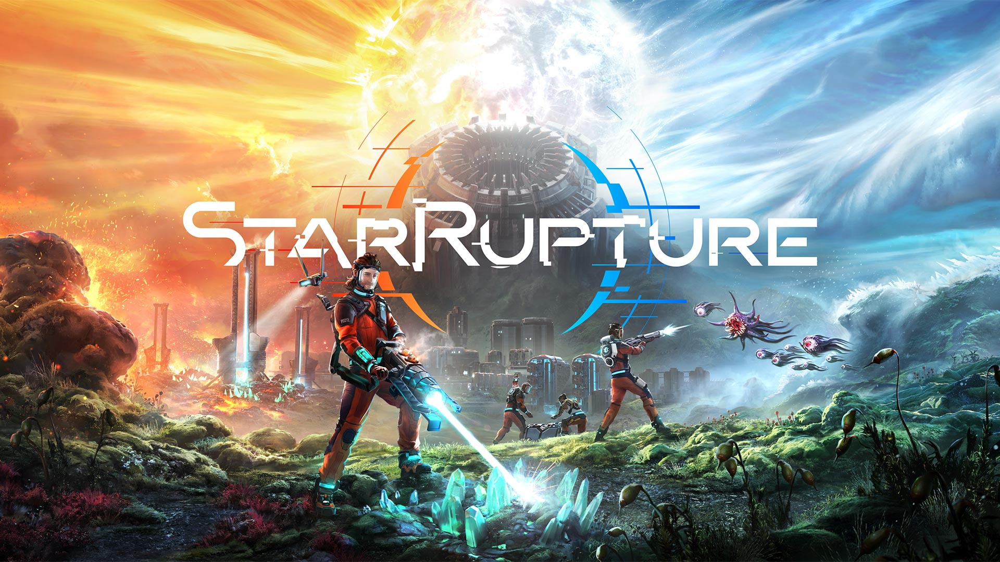

Alien Worlds, Deadly Battles: StarRupture Unleashed
Posted on: March 26, 2026
Fire vs Ice: Enter the World of StarRapture
In a universe where survival is the only rule, StarRupture throws players into a breathtaking yet deadly world divided between two extremesburning fireland and freezing icy terrains. This isn't just a game; it's a battle against nature itself.
From the moment you step into this hostile enviroment, every decision matters. One wrong move in the scorching heat can drain your resources, while the freezing cold can slow you down and leave you vulnerable. The game perfectly blends environmental challenges with intense combat, making survival feel real and thriling.
Players are equipped with futuristic weapons and tools to explore unknown lands, gather resources, and defend themselves against terrifying alien creatures. each encounter feels intense, forcing you to think fast and act smarter:
What truly makes StarRupture stand out is its dynamic world. The constant clash between fire and ice creates unpreditable situations, ensuring that same. Exploration becomes an adventure, and survival becomes a test of skill.

Why This Games Stands Out:
- Dual Extreme enviroments (Fire & Ice)
- Real survival mechanics
- Intense alien combat
- Immersive and dynamic world
Final Words:
If you're looking for a game that combines stunning visuals with hardcore survival gameplay, StarRupture is definitely worth your attention. Step in adapt fast, and prove that you can survive both fire and ice.